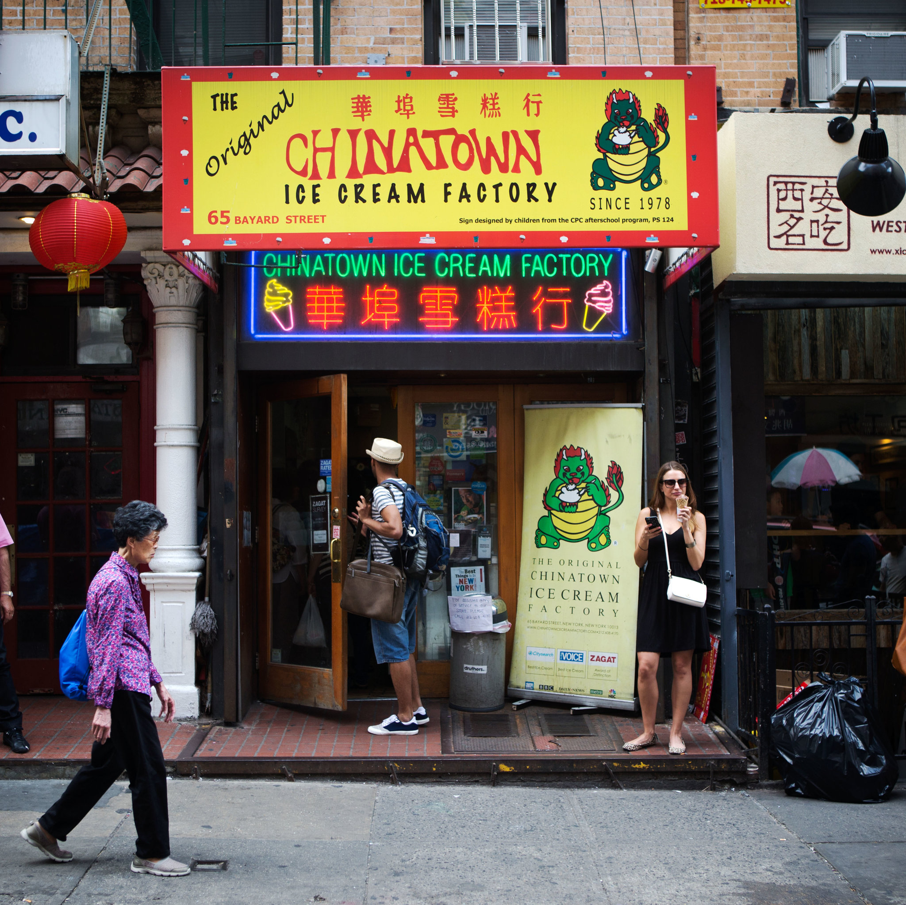
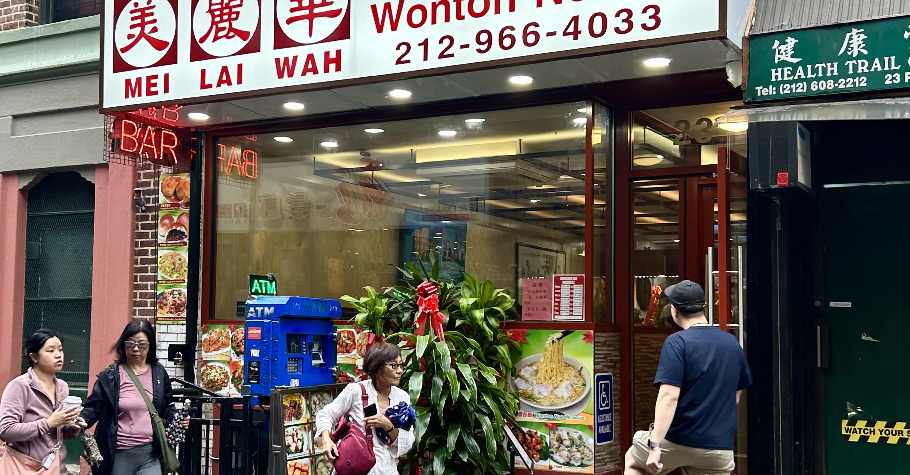
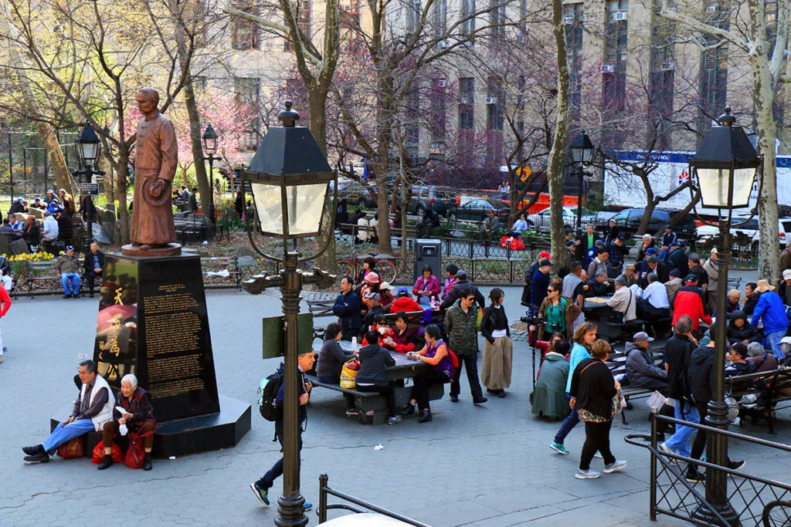

Chinatown Ice Cream Factory is a famous dessert shop in Manhattan's Chinatown. It is known for unique flavors like taro, black sesame, and lychee that reflect Chinese culture.

Mei Lai Wah is one of the most famous bakeries in Manhattan's Chinatown. It is one of the most famous tourist attraction in all of Chinatown. This place is best known for their steaming hot glazed pineapple pork buns. Mei Lai Wah is the best for people looking to trying some authenic Chinese baked goods!

Columbus Park is one of the most lively gathering spots in Manhattan's Chinatown. Many elderly members of the community come here to play traditinal Chinese music, practice tai chi, play chinese poker, and socialize with friends. This park is one of the oldest parks in Manhattan's Chinatown!